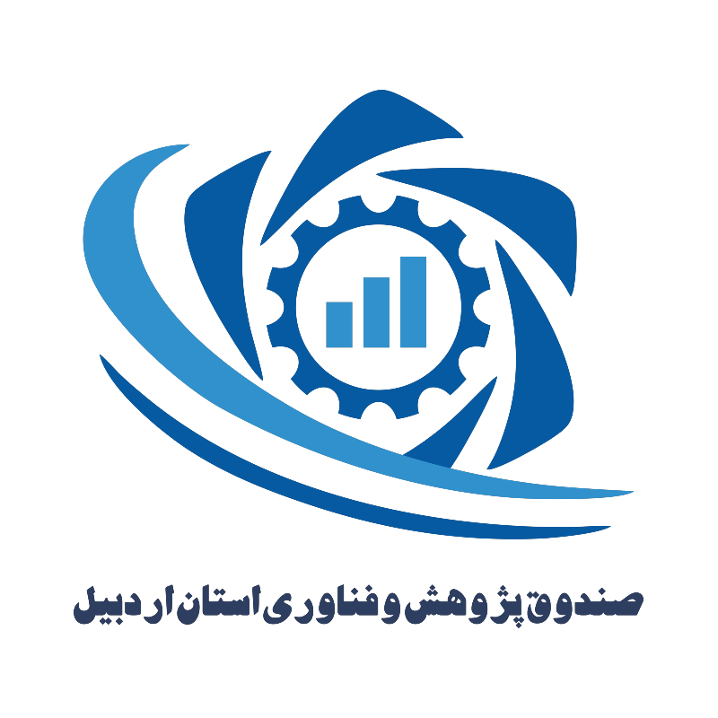

صندوق پژوهش و فناوری غیر دولتی استان اردبیل
صندوق پژوهش و فناوری استان اردبیل یک شرکت سهامی خاص غیر دولتی به شماره ثبت 16126 و شناسه ملی 14010072743 می باشد که با هدف ارائه خدمات مالی-اعتباری، سرمایه گذاری خطر پذیر، توانمند سازی و مهندسی مالی طرحها، کارگزاری منابع مالی دستگاهای دولتی و غیر دولتی، بانکها و موسسات مالی اعتباری در حوزه پژوهش، صنایع خلاق و دانش بنیان، با سهامداری بخش دولتی (پارک علم فناوری استان اردبیل، دانشگاه محقق اردبیلی، دانشگاه علوم پزشکی اردبیل) و سرمایه گذاران بخش خصوصی و بر اساس اساسنامه مصوب هیات وزیران به شماره مصوبه ای 125186/ت 57421/ه تاسیس شده است.
ورود به پنل کاربری